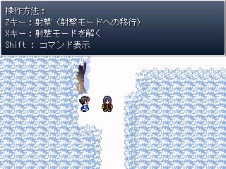

シルバーセカンド開発日誌
2007年03月
■
2007-03-30 (金) ツクモバ終了のお知らせ▼現在、自分が開発を行っている「シェパード捜査録」は
『ツクールモバイル＠アドベンチャー』の
サンプルゲームだったのですが、ゲームが公開される前から
ツクールモバイル終了のお知らせが出てしまいました。
なお開発者の皆さんには事前連絡が行っています、
なんだちょっと早いエイプリルフールかあ、気が利いてるなあとか
少し思いましたがぶっちゃけツクモバがヤバそうというのは
自分でもうすうす気付いてました！！これが現実かウオオー！
「ツクールモバイル」サービス終了のお知らせ(新ウィンドウ)
http://www.enterbrain.co.jp/tkool/close.html
(インターネットアーカイブ)
サービス終了日時は「2007/5/31 23:59」です
ちなみに、サンプルゲーム「シェパード捜査録」の公開予定日は
4/10 第１話公開予定
5/15 第２話公開予定
となっているそうです。でも5月中に遊ぶには4/30までに
ツクモバに登録しなきゃいけないらしいので、
どうしても遊びたいハァハァって方はそれまでにご登録あれ。
っていうか配布たったの二週間って開発期間より短ーい！
でももっと悲しい5/22（5/29も?）配信予定の方も
いらっしゃるので……ご愁傷様です。
作品は配信形式が変わって公開される（かもしれない）そうです。
完全に配布されなくなった時点でPCゲームに移植してもいいか
と質問したところ、ひとこと言ってくれたら構わないとの
ことでしたので、そのときが来たら移植すると思います。
ちなみによく考えれば本作はシモネタがありません、超健全！！
これは快挙といっていいのではなかろうか、ううむ。 現在も引き続きDocomo用ゲーム、
シェパード捜査録第二話を開発続行中です。
なお、今回のは全然開発に関係ない記事です。
プロバイダさんはウィルスメールは弾いてくれても
スパムメールは省いてくれないので、うっかりメアドを
サイトに載せてるとエラいことになります、という一例をば。
クリックすると拡大

↑
※全部広告・宣伝系のスパムメール(3/29) 12時間で約40通
さすがに「わかりました」とか「間違いありませんか？」
程度のタイトルでは騙されなくなってきていますけれど、
その中でもついうっかり読んでしまう嫌らしいタイトルは
「違うよ」「ご相談の件」「メンテナンスのお知らせ」
など、素のメール返信ぽいものとか仕事っぽい内容のもの！
もちろん内容はアダルトサイトの宣伝とかそんなのばかりですが
中にはホントにメンテ情報が混ざってたりしてヒャッホウします。
仕事用としていちおう載せておかないといけないんだけど、
でもスパムまみれでどうしようもなくなったアドレスって
皆さん一体どうやって使ってるんでしょ、謎。
いちおうスパムメールのアドレスを
受信禁止登録していっているのですが、
これもキリがなさげです。
何はともあれ、メールアドレスを
そのままサイトに載せると極めて危険ですので
皆さんご注意を、って基本ですけれどね！
※3/30追記
BBSにてCaz様からスパム用ツールの情報を頂きました。
http://muumoo.jp/soft014.shtml
結構使えそうなので試してみたいと思います、
情報ありがとうございました！ ■
2007-03-25 (日) RPGエディタ作り▼不覚にも風邪を引いてしまったのか喉が猛烈に痛いです。
今週は相変わらずエンターブレインのお仕事やってます。
プレイする人少ないんだろうなーとか思うと
どんどん開発への意欲がなくなっ（ゲホッゲホッ）。
Docomoゲームの開発状況なんて聞いても面白くないと思うので
現在こっそり開発中の自作RPGツクール、もとい
「WOLF RPGエディター」についての情報をチラホラと掲載。

▼追記を開く▼このエディタ、現在一部の人（主に私＋もう一人なんですが）に
テストしてもらってる段階で、バグはぷちぷち潰しています。
扱いがややこしい部分がいっぱいあるのですが、分かれば
クリフ迷宮録程度のシロモノならすでに作れる状態です。
でも説明書などは一切作ってないので、
公開したら誰かwikiにまとめてくれ頼む！状態です。
なお、ツクールに最初から付いているような
顔グラフィック表示機能やら戦闘システム、アイテム、
ステータス欄、メニュー画面などは全くないので、
自分で全自作する必要があります。
一見メチャメチャ敷居が高そうですが、
コモンイベントのインポート、エクスポート機能
（あるコモンイベントをファイルとして出力する機能）
を付けているので、他の人が作った自作システムをそのまま
自分のゲームに取り込むことが可能です。
ある程度ツールが流通して「コモンイベント職人」が
現れるくらいになれば、好きなメニューシステムを探して
ゲームに搭載するといったことができるかもしれません。
ちなみに「Xつ下のコモンイベントを読み込む」なんて機能も
搭載しているので、それで処理を統一すれば
コモンイベント複数に渡る巨大システムでも取り込むことが可能です。
RGSSが配布できるならコモンイベントだって配布できるはず！
画面解像度は640x480と320x240を選択可能にする予定です
（現状では640x480のみ）
3D描画機能を持つグラフィックボードがあれば、
CPUが弱くても処理が超絶軽くなります。
このエディターは、RPGツクール2000をある程度使いこなせて
機能や解像度に微妙に不満を持ってる、だけど、
RPGツクールXPは重い、RGSSがちょっと難しい、
という感じの方々をターゲットとしています。
ついでに図らずもVistaで動くらしいことと、
今後OSの進化に伴って私がそれに対応＆改造するかもしれない
というのがメリットです。あと基本機能は無料にします。
これで少しでもアマチュアゲーム界に風が吹けば嬉しいのですけれど。
あと、当然といえば当然なのですが、最大のデメリットは
RPGツクール用素材が一切使えないことです。
画像やMIDIはともかく、効果音を集めるのが大変！
いざツール開発してみると、RPGツクールシリーズって
プログラム部分より素材費の方が絶対高いんじゃないかと思うほど。
一応、データのフォーマットが固まったら公開予定です。
いつになるか分かりませんが、自分がこのツールで
まともに一本作れたら公開しようと思います。
さっきいじってたらクリフ迷宮録が動かなくなりました、オーノー。
ちなみにセーブのフォーマットが今も変わり続けているので、
修正のたびにセーブデータ吹っ飛ばしまくりです。オーノー。■
2007-03-20 (火) シェパード捜査録▼
Docomo用ADV、シェパード捜査録第一話βを
担当者の方に送りつけるところまでこぎ着けました。
あとは指示された部分をちょこちょこ手直しして完成です。
結局、分岐や選択肢全くなしで、動物顔キャラが繰り広げる
コメディサスペンスノベルゲームになりました。
そのうちツクールwebにアップされると思います。
個人的にかなり短期間で仕上げた一作なので
質はどうなのか分かりませんが、いつも通り
全力でやるだけやりました！
結局、全体の作業の流れとしては
プロット提出する→α版作って送る→
β版作って送る→最終微調整
という感じでした。
それにしても、やれば20日間くらいで画像から何から
全部用意できるんだなあと驚きました。
もちろん結構時間があったといえばあったんですけれど、
細切れの時間の中だと同じ分だけ時間があっても
完成しないので、やっぱりゲーム開発において
まとまった時間というのは必要だなあと感じます。
あとは第二話を作成して、お仕事の方はひとまず一段落です。
そしたらPCゲーム開発に戻って、
ツール作ったりシルエットノート追加シナリオ書いたりと
夢が広がります、ウフフ。■
2007-03-18 (日) ガンアクションRPG▼過去のプチ作品紹介第三弾『ガンアクションRPG』
RPGツクール2000で作成しかけたアルバートの
ガンアクションゲーム（2年前に期間限定でアップしたもの）

「ガンアクションRPG」 1MB Zip プレイ時間3分くらい
3分ゲーム的な一発ネタです。
詳しい操作説明はゲーム中の説明をご覧下さい。
敵に壁際に押し込まれるとハマりますのでそういうときはF12。
なお非サポート作品なのでミスやバグ報告等は不要です。 ■
2007-03-12 (月) ﾓﾊﾞｲﾙ作品進行中▼モバイル作品用にタクミさんに
作っていただいたMIDI曲を掲載！
いちおう二次利用は禁止です。
■レースのBGM(MIDI,33KB)
■レース会場のBGM(MIDI,20KB)
ただ、携帯で音楽オンにして聞く人ってなかなか
いなさそうなので（特に通学・通勤中に遊んでる方）、
せっかくいい物を作っていただいたのにちょっと
もったいないなあと思うところも。
いやそりゃ報酬はお渡ししますけれど、
創作ってやっぱお金だけではありませんし。
創作というのは、公開する範囲が広く、より多くの人に
作品を見てもらえる可能性が高ければ高いほど、
意欲が上がっていくものだと自分は思っています。
もちろん、その分責任も重くなりますから、
これはある程度慣れた人の感覚なのかもしれません。
何はともあれ、モバイル用作品をぱぱっと作って
PCゲームの開発に戻りたいと思います。 過去のプチ作品紹介第二弾『クリフ迷宮録』
自作のRPG作成エディタで作成したサンプルゲーム。
（過去ログ 2007/2/4の日誌より引用）

（マップチップ製作・ツールデバッグ協力 すう 様（すうらぼ）
プログラム部分デバッグ協力 卑しい人 様 、安陵 様）
「クリフ迷宮録」 5MB プレイ時間10分くらい
推奨環境：
Win98,Me,2000,XP対応（ただ98、Meには未知のバグがあるかも）
Vistaでも動くそうですが、情報が少ない状況です。
CPU 800Mhz以上、メモリ256MB以上（たぶん）
ただ上記を満たしていなくとも、3D描画可能なグラフィックボードが
入っていれば動作が非常に軽くなります（※3Dモード使用時） ▼追記を開く▼【注意】
シルフェイド見聞録の戦闘システムにプラスアルファした程度の
システムですが、システムの説明が入っていないので
そのあたりがちょっと不親切です。
もともと公開する予定無しだったもんで。
それと、ベースがプログラム作品である都合上、
動作したり動作しなかったりする可能性があるので
感想・動作不良その他全てのご意見は全て
こちらでお願いします。
シルフェイド同盟 交流掲示板
『クリフ迷宮録スレッド』(閉鎖)
【バグかどうか紛らわしい仕様】
敵Aとクリフの行動が同時に発生する（共に行動カウントが0になる）と
クリフの攻撃で敵Aを倒しても、敵Aが最後に一撃攻撃してくることが
ありますがバグではありません。クロスカウンターしたんです！
（ホントかよ）
【すでに分かっているバグ】
特定条件（不明）でまれにマントが武器欄に入ってしまい、
次に攻撃したときにマントが砕け散ることがある → 修正未定■
2007-03-09 (金) シューティングもどき▼過去のプチ作品紹介第一弾
VC++で組んだシューティングゲームもどき。
（2006/2/26の日誌より引用）

といってもキャラが動いて攻撃の当たり判定が設定できるように
なっているだけですが、お暇な方は↓からどうぞ。
【シューティングプロトタイプ(500KB)のダウンロードはこちら】
移動は方向キーかWASD(W:上、A:左、D:右、S:下）で、
ショットはマウス左クリックです。右クリックで敵が出ます。
DirectX9じゃないと動かないかもしれません。
敵は赤い所にショットを当てないとダメージを与えられません。 ■
2007-03-07 (水) 題材大事+ｼﾙ見絵▼
お仕事用スクショ貼るとアレなのでシル人物録マイア絵。
最近始めた、「プロットを書いてからそれに沿ってシナリオを書く」
という手順を行っていく上で、シナリオの文章を書いてるときに、
気持ちが「書くのが非常に億劫になるとき」と、
逆に、「もの凄い勢いで筆が走るとき」が
ハッキリ分かれることに気付きました。
億劫になるのは、プロット中で話がいまいち
話が盛り上がらない部分を書いてるときで、
凄い勢いになるのは面白い部分を書いているとき。
そりゃまあ、つまらない題材で書けって言われたら
当然つまらないわけで。
ゲーム開発は、途中で頓挫することが多いですけれど、
自分で絶対面白いと自信を持って言える企画や構想でないと
最後までモチベーションを維持できないだろうな、
という気持ちがあります。実は、作っている間よりも
作る前の方が重要という。
自分のモチベーションに繋がるほどの面白い構想で
作れれば、ユーザの人にもきっと楽しんでもらえるだろうし、
自分も開発過程が楽しくなるだろうし、そういった意味で
みんな幸せになれそうな気もします。
幻想譚のときは、
「一歩ごと時間経過して、時刻に応じて状況が変化するシステム
とか面倒で誰も作らんだろう」という自信があったので、
15ヶ月間、モチベーションが維持できましたが、
次も同じことだけをやるのはモチベーションが上がりません。
実はその辺のアピールポイントとなりそうな要素が
まだモヤモヤ状態なのが難だったりします、千夜一夜。
ゆっくり考える時間もできそうなので、しっかり考えたいと思います。■
2007-03-02 (金) 開発日誌を移転！▼
アルバートの恥ずかしい日誌
開発日誌を毎度HTMLで作るのは面倒なのと、
ユーザさんが過去の情報にアクセスするのが難しいという理由で
ブログに変更することにしました。
これなら検索したい内容があっても一発で調べられるので
ユーザさんにとっても楽なハズ！
例えば「千夜一夜」で検索すればそれに関する記事が
全部出るので、開発過程で何を考えて作ったかという
過去の記録も一目瞭然にできます（今はまだ何も出ないけど）2007年03月
Copyright © SmokingWOLF / Silver Second
 カテゴリ: プチ作品
カテゴリ: プチ作品 カテゴリ: プチ作品
カテゴリ: プチ作品